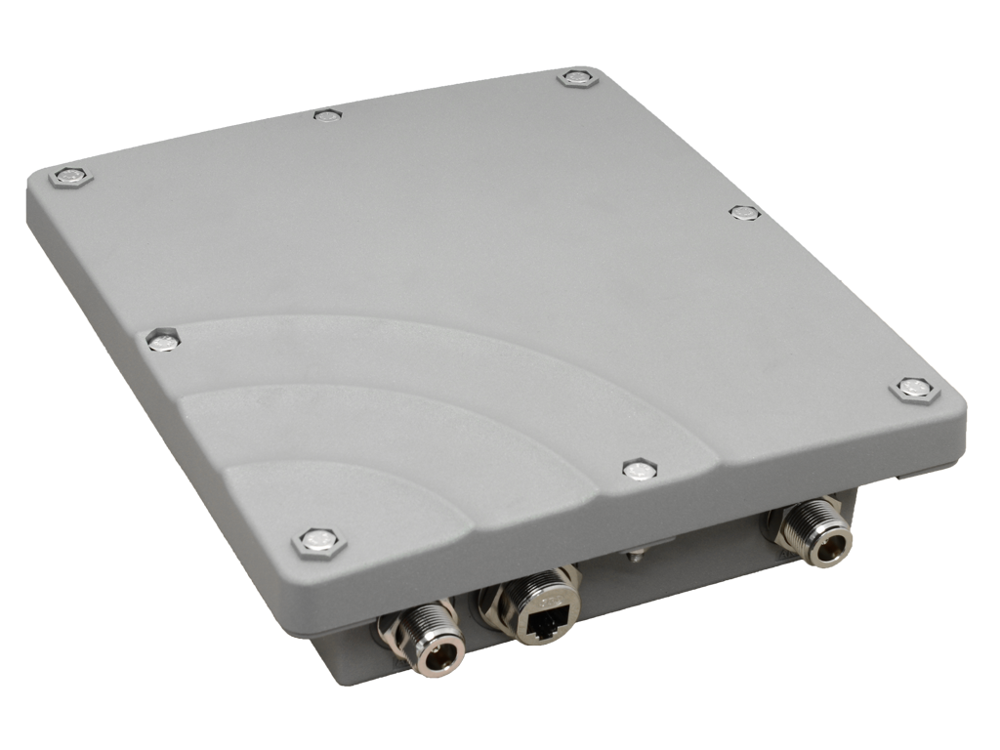
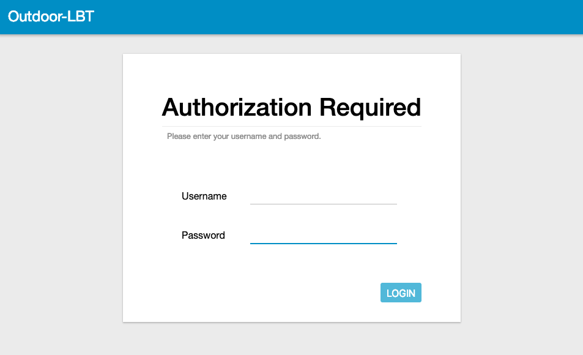
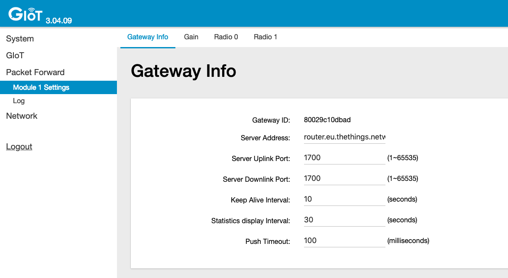
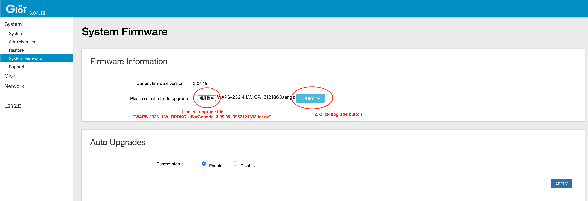

This guide contains instructions for connecting The Things Outdoor Gateway to The Things Stack.

The Things Outdoor Gateway (TTOG) is an industrial, outdoor and fully compliant gateway at a very low cost.
Salient Features:
LoRaWAN 1.0.2 compliant
Supports eight channels for EU868 and US915 bands
3G/4G backhaul via built in modem
Supports LBT (Listen Before Talk)
EU868, US915, AS923 and CN470 versions available
IP67 waterproof enclosure
Dimensions: 230 x 200 x 68mm
Weight: 2.05kg
Power voltage: 55VDC/0.6A via included PoE adapter
The outdoor gateway is currently available from Connected Things Store in both EU and US versions.
Prerequisites
User account on The Things Stack with rights to create Gateways.
The Things Outdoor Gateway connected to your local network, with an IP address.
Set Up Gateway
Connect all antennas:
ANT 1 - GPS
ANT 2 - LTE antenna
ANT 3 - LoRaWAN antenna
ANT 4 - (not used)
Then, connect the PoE injector output cable to the gateway ethernet connector. Connect the PoE input cable to your network.
Configuration
The ODU GUI is a web interface to configure all network settings. The ODU GUI uses the IP address assigned by the gateway to enter the network setting page.
Connect and power the gateway as above. The gateway will use DHCP to request an IP address from the network. Find this IP address from your router and enter the IP address assigned to the gateway into the web browser to access the ODU GUI interface. The configuration page should look like this:

Note:
Log in with the username admin and the web password from the label on the back of the unit - under the barcode. Older firmware versions used the default password admin so use this if your label doesn’t have a web password.
Navigate to Packet Forward > Module 1 Settings on the left hand menu and enter the following settings to connect the gateway to The Things Stack:
Server Address: The address of your The Things Stack instance. See Server Addresses
Server Uplink Port: 1700
Server Downlink Port: 1700

Save the Gateway ID, you will need this later when adding the gateway in The Things Stack.
Set the network settings via Network > WAN. You can choose to connect via Ethernet or 3G/LTE. Reboot the gateway after configuring the network settings.
If you connect via 3G/LTE, it will take a few minutes before the gateway will start routing messages.
Once the gateway is in LTE backhaul mode it doesn’t request an IP from the Ethernet interface again. To connect to the gateway and open the ODU GUI again, you can access the web interface via the fallback IP address: 168.168.168.253.
You will need to set your PC’s IP address in the same range, e.g.:
IP address: 168.168.168.100
Subnet Mask: 255.255.255.0
Router: 168.168.168.253
Registration
Create a gateway in The Things Stack by following the instructions for Adding Gateways.
Give your gateway a unique Gateway ID in The Things Stack - this is just for you to identify the gateway and it does not need to be the same as the Gateway ID displayed in the gateway.
The Gateway ID in the gateway is used to derive the EUI, which can be found in the ODE GUI, under Packet Forward > Module 1 Settings. Add 0000 at the beginning of the Gateway ID to get the Gateway EUI. For example, the Gateway ID 80029c10xxxx will yield the Gateway EUI 000080029c10xxxx.
Add this EUI in The Things Stack as Gateway EUI.
If all steps have been followed correctly, once you register your gateway it will connect to The Things Stack.
Troubleshooting
When you cannot find a way to change the LoRaWAN® settings, you might need to update the system firmware. You can do so by following steps below:
Navigate to System > System Firmware on the left hand menu
Download this file, making sure to keep the file name exactly the same (do not unzip this file)
Upload the file and click Upgrade
The gateway will automatically reboot with the upgraded firmware